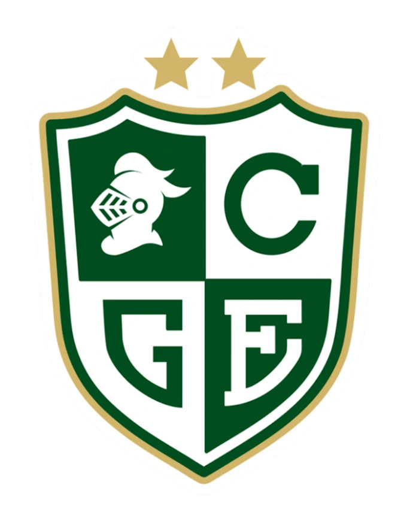
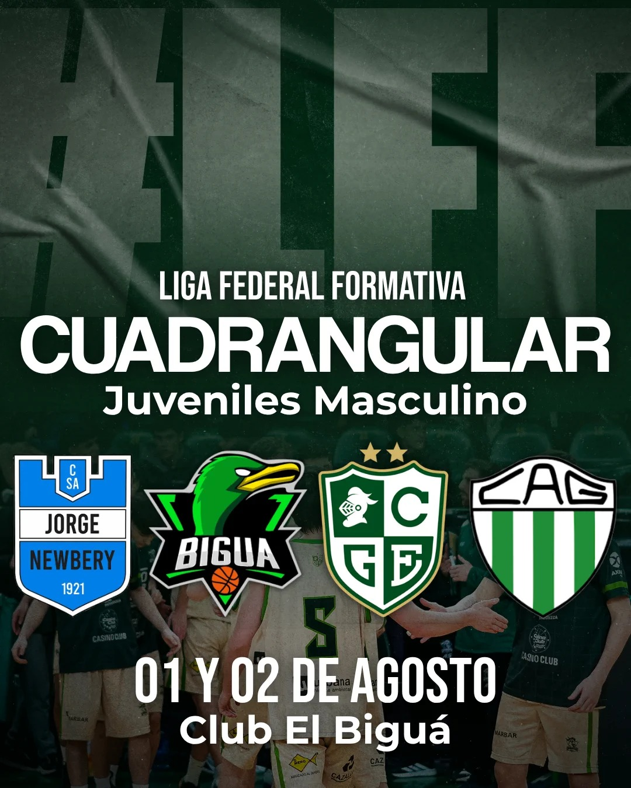
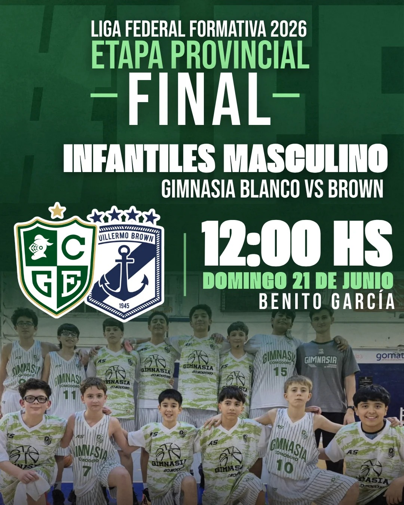
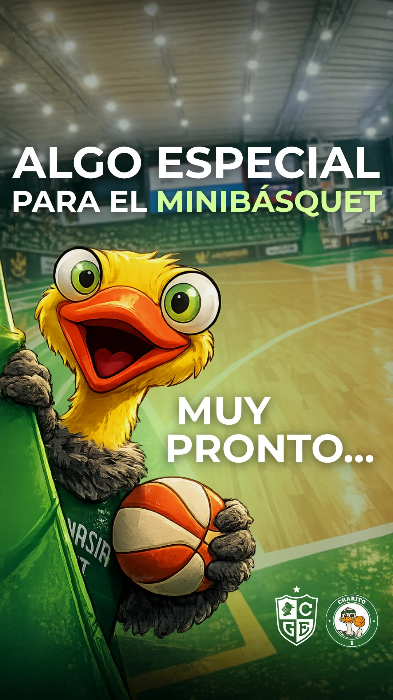

Comunicación deportiva
Gimnasia Formativas
Entre marzo de 2025 y agosto de 2026 estuve a cargo de la comunicación de las categorías formativas del Club Gimnasia y Esgrima de Comodoro Rivadavia, integradas por jugadores y jugadoras de entre 5 y 21 años. Mi trabajo consistió en organizar y verificar la información de cada categoría, planificar los contenidos y sostener una comunicación institucional clara, ordenada y cercana para las familias y la comunidad del básquet.
- Enfoque
- Comunicación institucional deportiva
- Responsabilidad
- Gestión y organización de contenidos
- Cuenta
- @gimnasiaformativas
- Período
- Marzo de 2025 — agosto de 2026



Contexto
Comunicación cotidiana
El trabajo semanal incluía la recepción de información, fotografías y videos aportados por delegados, entrenadores, familias y dirigentes. A partir de esos materiales, cada actividad tomaba forma en fixtures, resultados, historias y publicaciones alineadas con la identidad institucional del club.
Desafío
Trabajo completamente remoto
Todo el trabajo se realizaba a distancia, lo que exigía adaptarme al material recibido, reconocer qué recursos podían utilizarse y encontrar la mejor manera de presentar cada actividad, incluso cuando las fotografías, los videos o la información llegaban desde distintas fuentes.
Participación
Responsabilidades
La tarea requería verificar fechas, horarios, nombres, resultados y fotografías antes de cada publicación. La coordinación con distintas personas, la incorporación de correcciones y el cuidado del tono formaban parte del proceso, especialmente porque gran parte de quienes aparecían en los contenidos eran niños y adolescentes.
Continuidad
Identidad y variedad
La cuenta acompañaba partidos, torneos, reconocimientos, actividades especiales y distintos momentos de la vida diaria de las categorías. Aunque los contenidos y formatos cambiaban, cada publicación mantenía una misma identidad visual y un tono institucional, cercano y respetuoso.